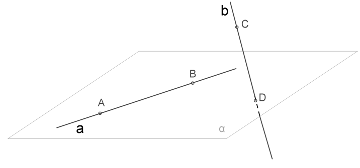

Скрещивающиеся прямые - две
прямые, для которых не существует
плоскости, в которой бы они обе лежали.

Признак скрещивающихся прямых
Если одна из двух
прямых лежит в некоторой
плоскости, а другая
прямая
пересекает эту
плоскость в
точке, не лежащей на первой
прямой, то данные
прямые скрещиваются.
Теоремы о скрещивающихся прямых в пространстве
-
Через каждую из двух скрещивающихся прямых можно провести одну и только одну
плоскость,
параллельную другой
прямой.
-
Любые две cкрещивающиеся прямые имеют общий
перпендикуляр, и притом только один.
Он также является общим перпендикуляром параллельных
плоскостей, проходящих через эти
прямые.